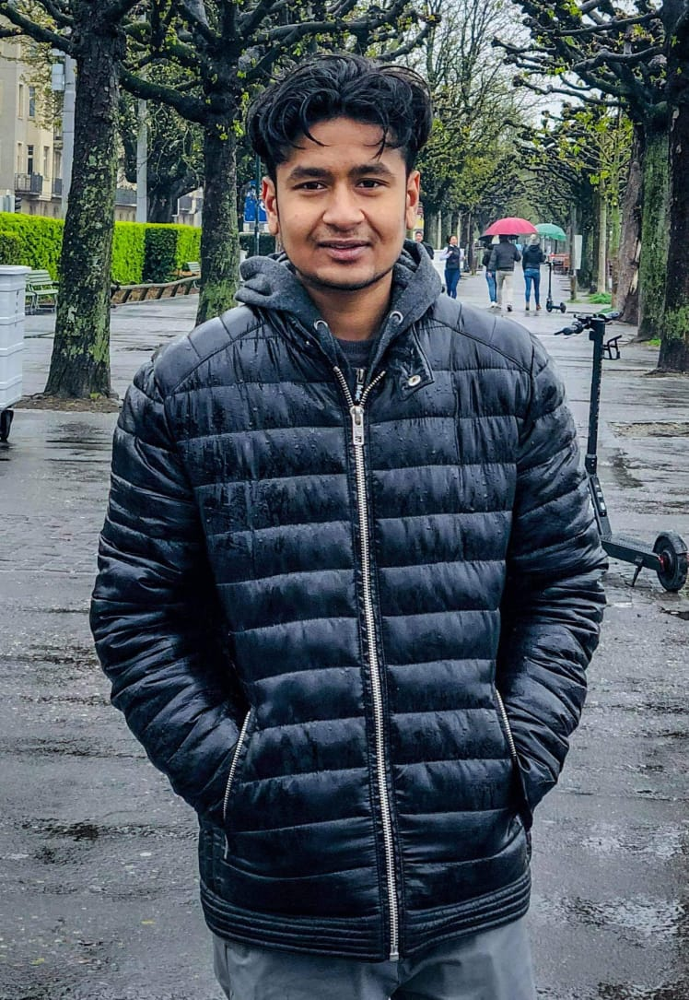

|  | Nationality: Bangladeshi Date of birth: 13 May 1996 Gender: Male Phone: (+44) 7426886333 Email address: tipu.bitla@gmail.com Address : 11 Belle Vue Terrace, CF37 1TQ Cardiff (United Kingdom) |
Graphics designer BMJ Company [ 1 Jan 2018 – 30 Apr 2018 ] City: Cardiff Country: United Kingdom My role was social media optimisation, which is creating new blogs on different social media on behalf of the company. I learned some basic things about professionalism such as how to deal with the clients, how to behave with the colleagues, how to deliver presentation etc. It helped me to improve my personal skills related to my modules. I have come to know about the corporate culture, which was totally a new experience for me, for example, different companies have different forms of leadership and different ways of structuring the organisation in terms of their own protocol. The way we do, things in our daily life are completely different there. I worked as a graphics designer in there.I tried to generate ideas how the look should be by searching different social media. Then made a paper sketch of the design and showed it to my teammates in the meeting as we had meetings in every 2 weeks on google hangout to show the progress of the project. Once I got the approval, and then started to work on my part.